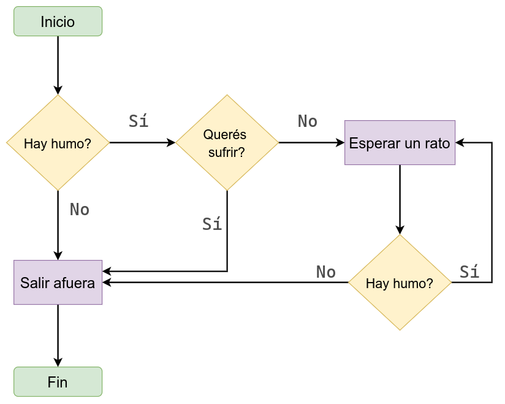
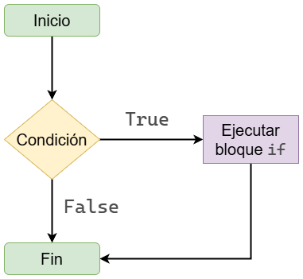
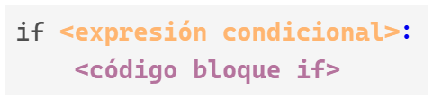
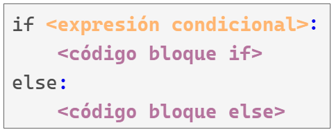
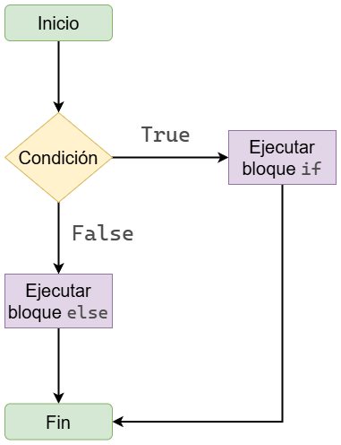
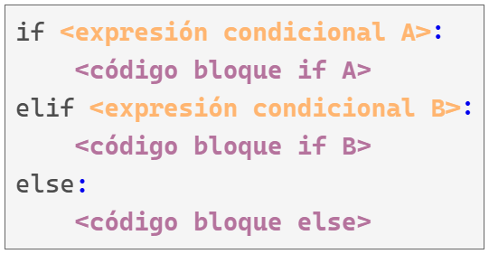
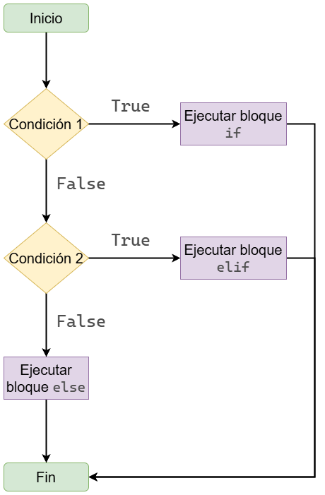
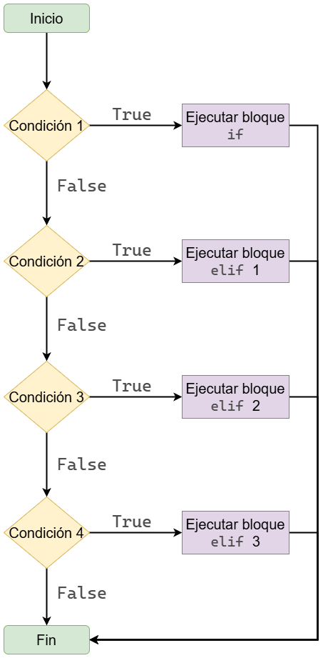
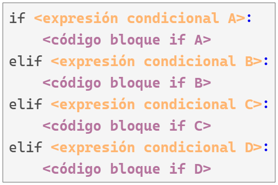

condicion = True
if condicion:
print("Se ejecuta el bloque if")Se ejecuta el bloque ifLas computadoras son muy buenas para muchísimas cosas. En particular:
El primer punto se refiere a la ejecución condicional de código y el segundo a la ejecución repetitiva de código.
Estos dos puntos pueden ser vistos de manera general como control de flujo del código.
En este apunte hablamos de la ejecución condicional de código.

ifLos bloques if utilizan la keyword if para evaluar una condición y ejecutar una sección de código en base al resultado de esta evaluación.

Veamos un ejemplo.
De manera mas general, un bloque if es de la siguiente forma:

Tiene los siguientes componentes:
if.True o False. Esta va seguida de los dos puntos : que indican el fin de la condición a evaluar y que lo siguiente es el bloque de código a ejecutar condicionalmente.Veamos otro ejemplo.
Se ejecuta el bloque if
Esto se imprime siempreEl segundo print() se imprime siempre porque está por fuera del bloque de ejecución condicional.
¿Cómo nos damos cuenta que no está dentro del bloque condicional?
Simplemente la indentación vuelve a ser normal. El fin de la indentación indica el fin del bloque de código.
if - elseVimos que el bloque if nos permite ejecutar un bloque de código de manera condicional, y que luego el programa sigue su ejecución normal.
También es posible que necesitemos ejecutar un bloque de código cuando las condiciones resulten en True y un bloque distinto en el caso contrario.
Para eso, utilizamos el bloque if-else.
Un bloque if-else es muy similar a un bloque if.
La diferencia es que nos permite definir otro bloque de código que se ejecuta cuando la prueba condicional es False.

edad = 21
if edad >= 16:
print("Tenés la edad suficiente para votar")
else:
print("Lo siento, aún sos demasiado jóven para votar")Tenés la edad suficiente para votar
Al igual que con el bloque if, cualquier parte del código que se escriba luego del bloque if-else es ejecutada sin importar el valor de las condiciones.
Veamos otro ejemplo donde evaluamos si un número es par o impar.
valor = 10
print(valor)
if valor % 2 == 0:
mensaje = "Es par"
else:
mensaje = "Es impar"
print(mensaje)10
Es parEn este caso, print(mensaje) se ejecuta siempre.
Lo que varía es el valor de la variable mensaje, que depende de si el número es par o impar.
if-elif-elseEs muy probable que tengamos situaciones donde necesitemos considerar más de dos escenarios posibles.
Para esto, Python ofrece los bloques if-elif-else.
Este tipo de programa considera varias condiciones y las evalúa de a una a la vez hasta que alguna es verdadera. Luego se ejecuta solamente el bloque de código que corresponde a la primer condición verdadera.

Supongamos que viene un parque de diversiones a Rosario y tiene los siguientes precios para la entrada:
edad = 3
if edad < 4:
print("El costo de entrada para vos es de $0.")
elif edad < 18:
print("El costo de entrada para vos es de $400.")
else:
print("El costo de entrada para vos es de $600.")El costo de entrada para vos es de $0.
elifHasta ahora utilizamos un único bloque elif, pero podemos usar tantos como sea necesario.
Por ejemplo, si el parque de diversiones decide realizar un descuento para adultos mayores, dejando el precio en $350, podriamos agregar otro bloque elif que represente la evaluación de esta condición.
elseNo hay ninguna regla que nos obligue a terminar un bloque de if-elif con un bloque else.
Utilizar el bloque else a veces es lo correcto, pero otras veces puede ser mejor poner una condición explícita en un último elif que contemple solamente la condición que realmente nos interesa.
edad = 10
if edad < 4:
precio = 0
elif edad < 18:
precio = 400
elif edad < 65:
precio = 600
elif edad >= 65:
precio = 350
print(f"El precio de entrada para vos es de ${precio}.")El precio de entrada para vos es de $400.El bloque elif que agregamos indica que el precio será de $350 cuando la edad de la persona sea mayor o igual a 65 años.
Esta condición es más explícita y fácil de entender que el bloque else que usábamos antes.
Sin embargo, todavía hay un problema: el programa sigue funcionando incluso si se ingresan edades fuera de un rango razonable. A continuación se muestra una versión más completa:
edad = 125
if edad < 0:
print("¡Error!")
precio = None
elif edad < 4:
precio = 0
elif edad < 18:
precio = 400
elif edad < 65:
precio = 600
elif edad >= 65 and edad <= 120:
precio = 350
else:
print("¡Error!")
precio = None
print(f"El precio de entrada para vos es ${precio}.")¡Error!
El precio de entrada para vos es $None.El diagrama y el código para el caso solo con elif se ven de la siguiente manera:

